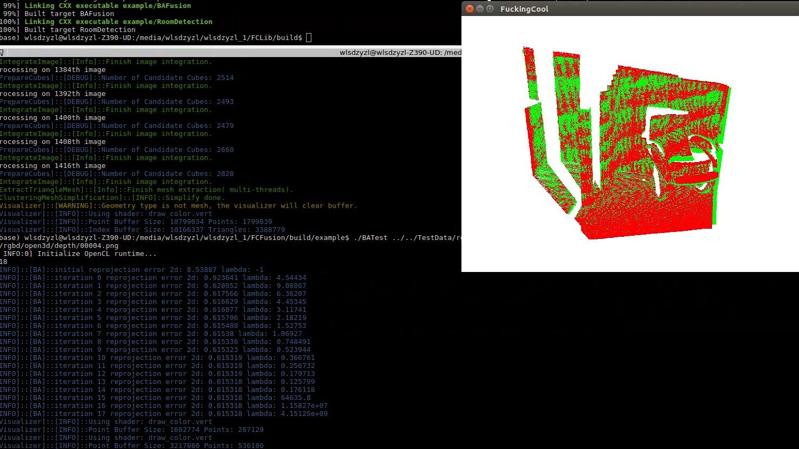

示例
这里是一些使用OPLib的程序.所有的程序都可以在examples文件夹中找到源代码.编译后,进入到build/example下可以输入下面的命令来测试.
读取PLY的点云/网格并显示
./ReadPLYPCD [filename.ply]
./ReadPLYMesh [filename.ply]
读取RGBD提取点云并显示
./ReadRGBD [color] [depth]
SparseTracking和DenseTracking
./SparseOdometry [source_rgb] [source_depth] [target_rgb] [targe_depth]
./SparseOdometryMild [source_rgb] [source_depth] [target_rgb] [targe_depth]
./DenseOdometry [source_rgb] [source_depth] [target_rgb] [targe_depth]
生成Scannet数据集的模型
example/GenerateModelFromScannet.cpp可以根据scannet提供的相机位姿，颜色以及深度图生成对应的模型。Scannet数据集有的颜色与深度图相机参数不一致，需要进行对齐。
./GenerateModelFromScannet [Path]
GetLabelUsingKDTree.cpp可以根据scannet提供的带有语义和实例的mesh，来给生成的模型提供语义信息。
./GetLabelUsingKDTree [original model path] [reference model path] [instance_json_path](optional)
生成的可视化模型将保存为colored_model_semantic.ply和colored_model_instance.ply。
网格简化
./SimplifyMeshClustering [filename.ply] [grid_length]
./SimplifyMeshQuadric [filename.ply] [simplify_ratio]
简化效果如下：


BundleAdjustment测试
这里输入一对RGBD frame,BundleAdjutment会根据Feature matching的结果进行位姿调整,之后会可视化匹配结果,并将重投影结果保存到目录下的图片中.
./BATest [source_rgb] [source_depth] [target_rgb] [targe_depth]
结果如下：



由于优化的是重投影误差,三维点云可视化的结果看起来可能并没有重投影到2d图片结果好.因为三维可视化只是考虑位姿变化,根据位姿得到3D点,而没有吸收到世界坐标点优化的内容.
ICP测试
ICPTest [source_pcd] [target_pcd]
ICPTest对两个点云进行注册.但是具体使用PointToPoint还是PointToPlane需要在代码中修改.下面是两个算法迭代30次后的运行结果,可以看出来PointToPlane的收敛速度比PointToPoint要快很多.


RansacRegistration测试
RansacTest [source_pcd] [target_pcd]
RansacTest对两个点云进行注册,在注册之前会对点云进行一个随机旋转,并加上平移,这样才能看出来GlobalRegistration的优势在哪里.
下面是运行结果,可以修改代码,可以选择直接看匹配后的结果：

选择画出来correspondence：

房间平面图检测
使用algorithm中的算法做的一些有意思的事情.在example/RoomDetection.cpp中,实现了根据有着semantic信息的点云来得知房间平面图.这里面用到了：LineDetection, PlaneDetection（实际上只需要使用一种,不过示例中两个都用了）, DCEL, KMedoidsClusteringDynamic.
./RoomDetection ../../TestData/model/room_with_labels.ply
输入的模型：

运行结果：


三个重建系统
一个没有后端的系统是不完整的.如果只追踪,而不进行优化,得到的结果会出现重影,如下图：

OPLib实现了3种较为完整的系统,使用的方法在前端或者后端略有不同,下面逐一介绍.
FBAFusion
FBAFusion用的是SparseTracking,Mild闭环检测,加上Fast BundleAdjustment后端优化,也就是首页展示的内容.
./FBAFusion ../../TestData/rgbd/607 0.01

FBAFusion最快.重建模型如下：

BAFusion
BAFusion用的是SparseTracking,Mild闭环检测,加上BundleAdjustment后端优化.之前说过了,BA在后面矩阵维度会很大,即使在BAFusion中,每个keyframe的特征点只有30个,后面依然要一分钟左右甚至更久才能优化一次.而且BA会优化空间点（优化投影噪声以及参数）,但是这部分优化在最后生成模型的时候并没有考虑,只用到了优化的位姿,所以重建模型看起来效果不如FBAFusion,不过依然可以看到优化的效果（没有出现重影）.如果考虑到各方面,BA的效果应该是最好的.
./BAFusion ../../TestData/rgbd/607 0.01
重建效果如下：

DenseFusion
DenseFusion使用的是DenseTracking,并且没有用2D的闭环检测.它将读入的帧每过\(N\)个作为一个submap,再检测到新的submap后,利用当前的submap与之前的submap进行GlobalRegistration,再通过设定阈值来检测是否匹配成功,这样也能达到global consistency.当然,DenseTracking以及GlobalRegistration相对于SparseTracking和通过Mild来排除掉大部分错误的闭环,要慢很多,所以DenseFusion速度也很一般,是一个离线重建系统.后端优化,DenseFusion采用的是Fast BundleAdjustment.
./DenseFusion ../../TestData/rgbd/607 0.01
重建结果：

注：颜色的问题是OpenCV的BGR与RGB存储问题.